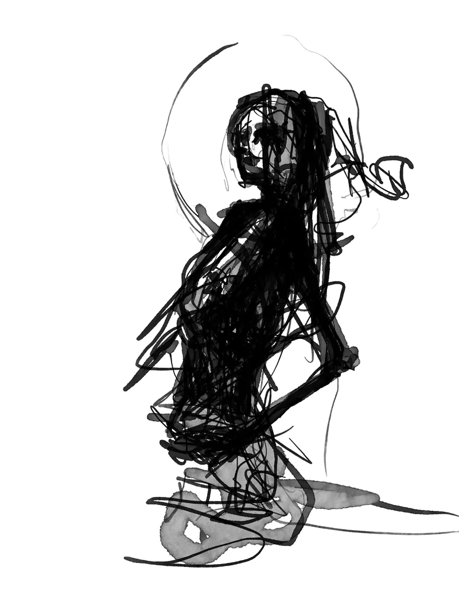
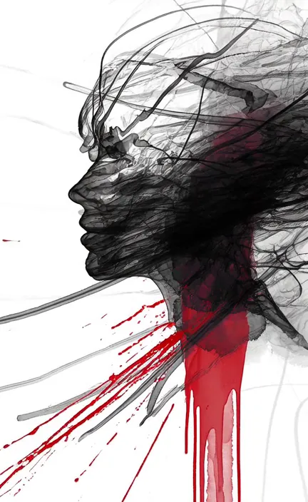
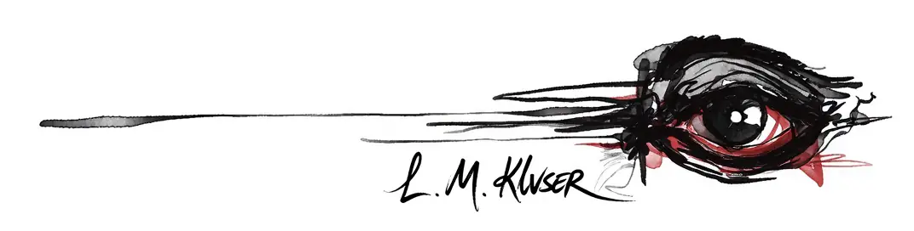
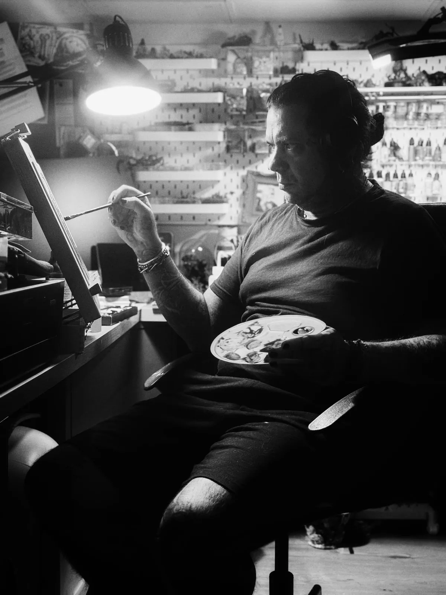

Zeichner in Köln-Ehrenfeld. Tusche und Farbe auf Papier, dazu Grafik für Clubnächte und Kollektive.


Werke
Arbeiten auf Papier. Tusche und Farbe, jedes Blatt ein Original.
Handschrift
Jede Arbeit fängt als Linie an: Linienbündel, Waschungen, Korrekturen, bis die Form steht. Schwarze Tusche und ein Rot auf weißem Papier — was stehen bleibt, ist das Original.
Manches bleibt ein einzelnes Blatt, manches wird eine Folge. „Befreiung der Körperlichkeit“ hängt als zwei Werke zu je drei Blättern: In Werk I sind die Gesichter zu sehen, in Werk II sind sie abgewandt.

Grafik
Plakate und Flyer für Clubnächte, Cover für Podcast und Platte, Signets für Kollektive. Auftragsarbeiten, gesetzt und gebaut statt gezeichnet — dieselbe Hand an anderem Gerät.
Atelier
Luke zeichnet in Köln-Ehrenfeld. Hier entstehen die Blätter; die Grafik entsteht am Rechner.
